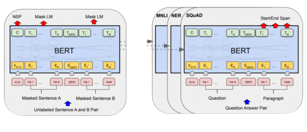

PRE-TRAINNING
Giới thiệu về Pre-training
Đào tạo trước mô hình ngôn ngữ đã được chứng minh là có hiệu quả để cải thiện nhiều ngôn ngữ tự nhiên nhiệm vụ xử lý. Chúng bao gồm các nhiệm vụ ở cấp độ câu như suy luận ngôn ngữ tự nhiên và diễn giải, Với mục đích dự đoán mối quan hệ giữa các câu bằng cách phân tích chúng một cách tổng thể, cũng như các nhiệm vụ cấp mã thông báo như nhận dạng thực thể được đặt tên và trả lời câu hỏi, trong đó các mô hình được yêu cầu tạo ra đầu ra chi tiết ở cấp độ mã thông báo
Pre-training of BERT
Việc đào tạo trước BERT liên quan đến việc đào tạo mô hình trên một
khối văn bản lớn để tìm hiểu các mối quan hệ theo ngữ cảnh giữa các
từ. Điều này được thực hiện bằng cách sử dụng kiến trúc Transformer
- là một loại mạng thần kinh có thể xử lý các chuỗi dữ liệu.
Transformer cho phép BERT học cả ngữ cảnh bên trái và bên phải của
một từ nhất định, do đó có thuật ngữ "hai chiều".
BERT được đào tạo trước thông qua quá trình masked language
modeling, trong đó các từ ngẫu nhiên trong một câu được che đi và mô
hình phải dự đoán từ đã che. Quá trình này cho phép BERT học được
quan hệ giữa các từ và hiểu ngữ cảnh mà chúng được sử dụng.
Trong quá trình đào tạo trước, mô hình được đào tạo trên các dữ liệu
qua các nhiệm vụ trước khi đào tạo khác nhau. Để hoàn thiện, mô hình
BERT đầu tiên được khởi tạo với các tham số được đào tạo trước và
tất cả các tham số được tùy chỉnh bằng cách sử dụng dữ liệu được gắn
nhãn từ các nhiệm vụ hạ lưu. Mỗi tác vụ hạ nguồn có các mô hình tinh
chỉnh riêng biệt, mặc dù chúng được khởi tạo với cùng các tham số
được đào tạo trước. Các ví dụ trả lời câu hỏi trong Hình 1 sẽ phục
vụ như một ví dụ đang chạy cho phần mền này. Một tính năng đặc biệt
của BERT là kiến trúc thống nhất của nó trên các nhiệm vụ khác nhau.
Có sự khác biệt tối thiểu giữa kiến trúc được đào tạo trước và kiến
trúc xuôi dòng cuối cùng.

Nhiệm vụ của Pre-training
Nhiệm vụ 1: Masked LM
Theo trực giác, đó là lý do có thể tin rằng một mô hình hai chiều
sâu hoàn toàn mạnh hơn mô hình từ trái sang phải hoặc sự kết hợp
nông giữa mô hình từ trái sang phải và mô hình từ phải sang trái.
Thật không may, các mô hình ngôn ngữ có điều kiện tiêu chuẩn chỉ có
thể được đào tạo từ trái sang phải hoặc từ đêm sang trái, vì điều
kiện hóa hai chiều sẽ cho phép mỗi từ “nhìn thấy chính nó” một cách
gián tiếp và mô hình có thể dự đoán một cách tầm thường từ mục tiêu
trong ngữ cảnh nhiều lớp. Trước đây thường được gọi là “Bộ mã hóa
biến áp” trong khi phiên bản chỉ dành cho ngữ cảnh bên trái được gọi
là “Bộ giải mã biến áp” vì nó có thể được sử dụng để tạo văn bản.
Để đào tạo một biểu diễn hai chiều sâu, chỉ cần che giấu một số phần
trăm mã thông báo đầu vào một cách ngẫu nhiên, sau đó dự đoán các mã
thông báo được che dấu đó. Chúng tôi gọi quy trình này là “LM đeo
mặt nạ” (MLM), mặc dù nó thường được gọi là nhiệm vụ Cloze trong tài
liệu (Taylor, 1953). Trong trường hợp này, các vectơ ẩn cuối cùng
tương ứng với các mã thông báo mặt nạ được đưa vào một siêu phần mềm
đầu ra trên từ vựng, như trong một LM tiêu chuẩn.
Mặc dù điều này cho phép chúng tôi có được mô hình đào tạo trước
theo hai hướng, nhưng nhược điểm là chúng tôi đang tạo ra sự không
phù hợp giữa đào tạo trước và tinh chỉnh, vì mã thông báo [MASK]
không xuất hiện trong quá trình tinh chỉnh. Để giảm thiểu điều này,
không phải lúc nào chúng tôi cũng thay thế các từ “che dấu” bằng mã
thông báo [MASK] thực tế.
Nhiệm vụ 2: Dự đoán câu tiếp theo (NSP)
Nhiều nhiệm vụ quan trọng phía dưới như Ques. Trả lời (QA) và Suy
luận ngôn ngữ tự nhiên (NLI) dựa trên sự hiểu biết về mối quan hệ
giữa hai câu, điều này không được mô hình hóa ngôn ngữ nắm bắt trực
tiếp. Để đào tạo một mô hình hiểu được các mối quan hệ của câu,
chúng tôi đào tạo trước cho một nhiệm vụ dự đoán câu tiếp theo được
nhị phân hóa có thể được tạo ra một cách tầm thường từ bất kỳ kho
ngữ liệu đơn ngữ nào. Cụ thể, khi chọn các câu A và B cho mỗi ví dụ
trước khi đào tạo, 50% thời gian B là câu tiếp theo thực sự theo sau
A (được gắn nhãn là Tiếp theo) và 50% thời gian đó là một câu ngẫu
nhiên từ kho văn bản (được gắn nhãn là NotNext). Như chúng tôi chỉ
ra trong Hình 1, C được sử dụng cho dự đoán câu tiếp theo (NSP).⁵
Mặc dù đơn giản, chúng tôi chứng minh trong Phần 5.1 rằng đào tạo
trước cho nhiệm vụ này rất có lợi cho cả QA và NLI. ⁶Mô hình cuối
cùng đạt được độ chính xác 97% -98% trên NSP. “Vectơ C không phải là
một biểu diễn câu có ý nghĩa nếu không được tinh chỉnh, vì nó đã
được huấn luyện với NSP.
Nhiệm vụ NSP có liên quan chặt chẽ với các mục tiêu học biểu diễn
được sử dụng trong Jemite et al. (2017) và Logeswaran và Lee (2018).
Tuy nhiên, trong công việc trước đây, chỉ các phần nhúng câu được
chuyển sang các tác vụ xuôi dòng, trong đó BERT chuyển tất cả các
tham số để khởi tạo các tham số mô hình tác vụ cuối.
Dữ liệu trước khi đào tạo Quy trình trước khi đào tạo phần lớn tuân
theo các tài liệu hiện có về đào tạo trước mô hình ngôn ngữ. Đối với
kho ngữ liệu trước khi đào tạo, chúng tôi sử dụng BooksCorpus (800
triệu từ) (Zhu et al., 2015) và Wikipedia tiếng Anh (2.500 triệu
từ). Đối với Wikipedia, chúng tôi chỉ trích xuất các đoạn văn bản và
bỏ qua các danh sách, bảng và tiêu đề. Điều quan trọng là sử dụng
kho ngữ liệu ở cấp độ tài liệu thay vì kho ngữ liệu ở cấp độ câu
được xáo trộn như Billion Word Benchmark (Chelba et al., 2013) để
trích xuất các chuỗi dài liền kề nhau.